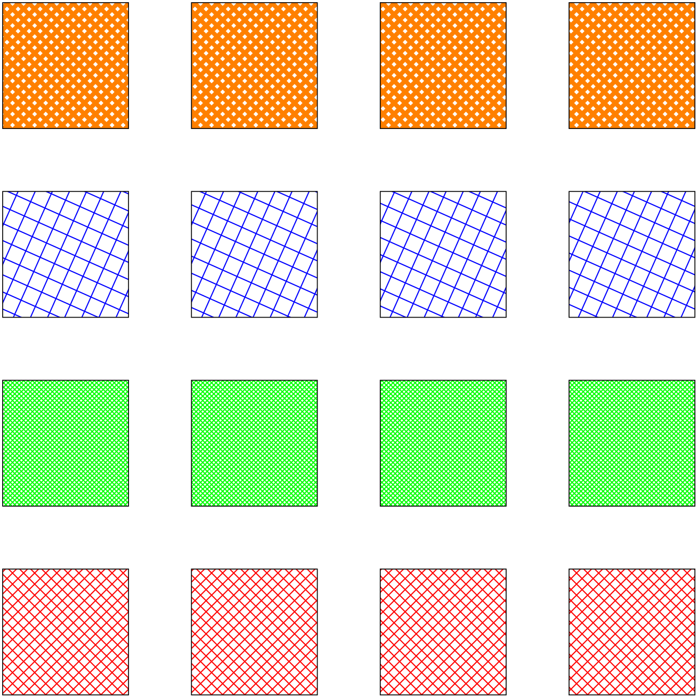
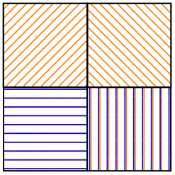
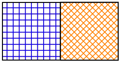
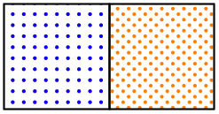
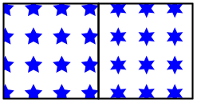
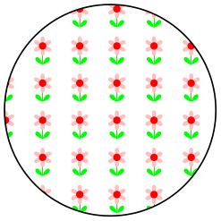
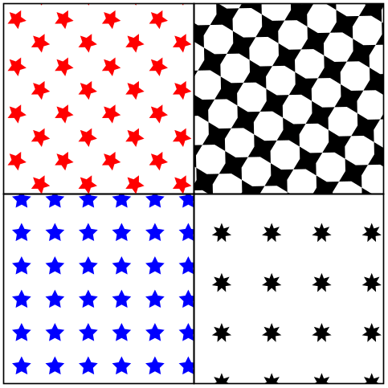
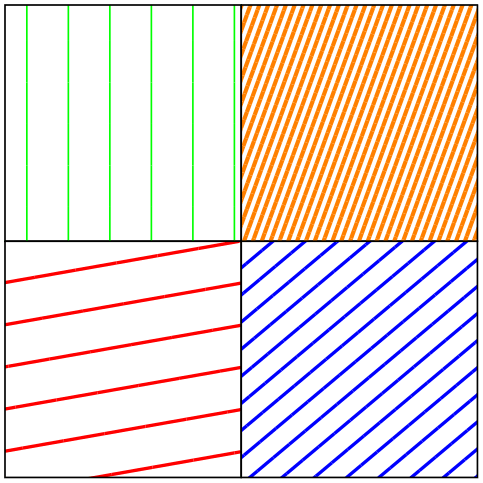

The TikZ and PGF Packages
Manual for version 3.1.9a
Libraries
62 Pattern Library
TikZ Library patterns ¶
\usepgflibrary{patterns} %
LaTeX
and plain
TeX
and pure pgf
\usepgflibrary[patterns] % ConTeXt and pure pgf
\usetikzlibrary{patterns} %
LaTeX
and plain
TeX
when using TikZ
\usetikzlibrary[patterns] % ConTeXt when using TikZ
The package defines patterns for filling areas.
62.1 Form-Only Patterns¶
| Pattern name | Example (pattern in black, blue, and red on faded checkerboard) |
| horizontal lines | |
| vertical lines | |
| north east lines | |
| north west lines | |
| grid | |
| crosshatch | |
| dots | |
| crosshatch dots | |
| fivepointed stars |

|
| sixpointed stars |

|
| bricks | |
| checkerboard |

|
62.2 Inherently Colored Patterns¶
| Pattern name | Example |
| checkerboard light gray |

|
| horizontal lines light gray |

|
| horizontal lines gray |

|
| horizontal lines dark gray |

|
| horizontal lines light blue |

|
| horizontal lines dark blue | |
| crosshatch dots gray |

|
| crosshatch dots light steel blue |

|
62.3 User-Defined Patterns¶
by Mark Wibrow
TikZ Library patterns.meta ¶
\usepgflibrary{patterns.meta} %
LaTeX
and plain
TeX
and pure pgf
\usepgflibrary[patterns.meta] % ConTeXt and pure pgf
\usetikzlibrary{patterns.meta} %
LaTeX
and plain
TeX
when using TikZ
\usetikzlibrary[patterns.meta] % ConTeXt when using TikZ
Define your own patterns with a syntax similar to
arrows.meta.
Caveat: This library is currently experimental and might change without notice. There are some known shortcomings that will hopefully be fixed in the future.
\pgfdeclarepattern{⟨config⟩} ¶
This command is used to declare a new pattern. In contrast to the normal patterns and in the spirit of arrows.meta this command takes a list of keys and values to define the pattern. The following keys are available:
/pgf/patterns/name=⟨name⟩(no default) ¶
The name of the pattern by which it can be used later on.
/pgf/patterns/type=⟨type⟩ (default uncolored) ¶
The type of the pattern maps to what was called “form only” and “inherently colored” in the language of the normal patterns. The available choices are:
• uncolored the pattern will obey the surrounding color. • colored the pattern will have an intrinsic color. • form only synonym for uncolored • inherently colored synonym for colored
/pgf/patterns/x=⟨dimension⟩ (default 1cm) ¶
Unit vector of the coordinate system in the \(x\)-direction.
/pgf/patterns/y=⟨dimension⟩ (default 1cm) ¶
Unit vector of the coordinate system in the \(y\)-direction.
/pgf/patterns/parameters=⟨comma separated list⟩ (default empty) ¶
A list of parameters that are passed to the pattern. This is usually a list of TeX macros. It is very important that these macros are fully expandable because the values they hold are being used for deduplication in the PDF file.
/pgf/patterns/defaults=⟨comma separated list⟩ (default empty) ¶
This list holds default assignments to the parameters passed to the pattern. The default keys can then be found under the /pgf/pattern keys/ prefix.
/pgf/patterns/bottom left=⟨pgfpoint⟩(no default) ¶
Bottom left corner of the pattern’s bounding box, e.g. \pgfqpoint{-.1pt}{-.1pt}.
/pgf/patterns/top right=⟨pgfpoint⟩(no default) ¶
Top right corner of the pattern’s bounding box, e.g. \pgfqpoint{3.1pt}{3.1pt}.
/pgf/patterns/tile size=⟨pgfpoint⟩(no default) ¶
Width and height of a single of the pattern as a pgf point specification, i.e. the \(x\) coordinate is the width and the \(y\) specification, i.e. the \(x\) coordinate is the width and the \(y\) coordinate is the height, e.g. \pgfqpoint{3pt}{3pt}.
/pgf/patterns/tile transformation=⟨pgftransformation⟩ (default empty) ¶
A pgf transformation, e.g. \pgftransformrotate{30}.
/pgf/patterns/code=⟨code⟩(no default) ¶
The code should be pgf code that can be protocolled. It should not contain any color code or nodes.
/pgf/patterns/set up code=⟨code⟩ (default empty) ¶
This code can be set if parameters have to be preprocessed before the actual pattern code can be run.

\usetikzlibrary {patterns.meta}
\pgfdeclarepattern{
name=hatch,
parameters={\hatchsize,\hatchangle,\hatchlinewidth},
bottom
left={\pgfpoint{-.1pt}{-.1pt}},
top
right={\pgfpoint{\hatchsize+.1pt}{\hatchsize+.1pt}},
tile
size={\pgfpoint{\hatchsize}{\hatchsize}},
tile
transformation={\pgftransformrotate{\hatchangle}},
code={
\pgfsetlinewidth{\hatchlinewidth}
\pgfpathmoveto{\pgfpoint{-.1pt}{-.1pt}}
\pgfpathlineto{\pgfpoint{\hatchsize+.1pt}{\hatchsize+.1pt}}
\pgfpathmoveto{\pgfpoint{-.1pt}{\hatchsize+.1pt}}
\pgfpathlineto{\pgfpoint{\hatchsize+.1pt}{-.1pt}}
\pgfusepath{stroke}
}
}
\tikzset{
hatch size/.store in=\hatchsize,
hatch angle/.store in=\hatchangle,
hatch line width/.store in=\hatchlinewidth,
hatch size=5pt,
hatch angle=0pt,
hatch line width=.5pt,
}
\begin{tikzpicture}
\foreach \r in
{1,...,4}
\draw [pattern=hatch, pattern color=red]
(\r*3,0) rectangle
++(2,2);
\foreach \r in
{1,...,4}
\draw [pattern=hatch, pattern color=green, hatch size=2pt]
(\r*3,3) rectangle
++(2,2);
\foreach \r in
{1,...,4}
\draw [pattern=hatch, pattern color=blue, hatch size=10pt, hatch angle=21]
(\r*3,6) rectangle
++(2,2);
\foreach \r in
{1,...,4}
\draw [pattern=hatch, pattern color=orange, hatch line width=2pt]
(\r*3,9) rectangle
++(2,2);
\end{tikzpicture}
There are a couple of predefined pgf patterns which are similar to their normal counterparts. For all of these the xshift and yshift are applied before the rotation. If you want to rotate before shifting, just rotate in the drawing code.
Pattern Lines
The Lines pattern replaces the horizontal lines, vertical lines, north east lines, and north west lines patterns. Unfortunately, due to the way the old patterns are constructed, namely that they are not simply related to each other by rotation, the Lines pattern cannot be used as a drop-in replacement.
However, the pattern options can be tuned to resemble the other versions closely. The available parameters are:
/pgf/pattern keys/distance(initially 3pt) ¶
Distance between lines.
/pgf/pattern keys/angle(initially 0) ¶
By default the lines are horizontal. The whole pattern is rotated by this angle. The rotation angle is measured in the mathematically positive sense.
/pgf/pattern keys/xshift(initially 0pt) ¶
Shifts the whole pattern in \(x\)-direction (before applying the rotation).
/pgf/pattern keys/yshift(initially 0pt) ¶
Shifts the whole pattern in \(y\)-direction (before applying the rotation).
/pgf/pattern keys/line width(initially \the\pgflinewidth) ¶
Thickness of the lines.
The following settings can be used to reproduce the other ... lines patterns.

\usetikzlibrary {patterns,patterns.meta}
\begin{tikzpicture}
\draw[pattern={horizontal
lines},pattern color=orange]
(0,0) rectangle
+(1,1);
\draw[pattern={Lines[yshift=.5pt]},pattern color=blue]
(0,0) rectangle
+(1,1);
\draw[pattern={vertical
lines},pattern color=orange]
(1,0) rectangle
+(1,1);
\draw[pattern={Lines[angle=90,yshift=-.5pt]},pattern color=blue]
(1,0) rectangle
+(1,1);
\draw[pattern={north east lines},pattern color=orange]
(0,1) rectangle
+(1,1);
\draw[pattern={Lines[angle=45,distance={3pt/sqrt(2)}]},pattern color=blue]
(0,1) rectangle
+(1,1);
\draw[pattern={north west lines},pattern color=orange]
(1,1) rectangle
+(1,1);
\draw[pattern={Lines[angle=-45,distance={3pt/sqrt(2)}]},pattern color=blue]
(1,1) rectangle
+(1,1);
\end{tikzpicture}
Pattern Hatch
The Hatch pattern replaces the grid and crosshatch patterns. The Hatch pattern without options is a drop-in replacement for the grid pattern.
/pgf/pattern keys/distance(initially 3pt)
Distance between crosses.
/pgf/pattern keys/angle(initially 0)
By default the lines are horizontal and vertical. The whole pattern is rotated by this angle. The rotation angle is measured in the mathematically positive sense.
/pgf/pattern keys/xshift(initially 0pt)
Shifts the whole pattern in \(x\)-direction (before applying the rotation).
/pgf/pattern keys/yshift(initially 0pt)
Shifts the whole pattern in \(y\)-direction (before applying the rotation).
/pgf/pattern keys/line width(initially \the\pgflinewidth)
Thickness of the lines.
The following settings can be used to reproduce the grid and crosshatch patterns.

\usetikzlibrary {patterns,patterns.meta}
\begin{tikzpicture}
\draw[pattern={grid},pattern color=orange]
(0,0) rectangle
+(1,1);
\draw[pattern={Hatch},pattern color=blue]
(0,0) rectangle
+(1,1);
\draw[pattern={crosshatch},pattern color=orange]
(1,0) rectangle
+(1,1);
\draw[pattern={Hatch[angle=45,distance={3pt/sqrt(2)},xshift=.1pt]},
pattern color=blue] (1,0) rectangle
+(1,1);
\end{tikzpicture}
Pattern Dots
The Dots pattern replaces the dots and crosshatch dots patterns. The Dots pattern without options is a drop-in replacement for the dots pattern.
/pgf/pattern keys/distance(initially 3pt)
Distance between dots.
/pgf/pattern keys/angle(initially 0)
By default the lines are arranged on a regular grid. The whole pattern is rotated by this angle. The rotation angle is measured in the mathematically positive sense.
/pgf/pattern keys/xshift(initially 0pt)
Shifts the whole pattern in \(x\)-direction (before applying the rotation).
/pgf/pattern keys/yshift(initially 0pt)
Shifts the whole pattern in \(y\)-direction (before applying the rotation).
/pgf/pattern keys/radius(initially 0.5pt) ¶
Radius of the dots.
The following settings can be used to reproduce the dots and crosshatch dots patterns.

\usetikzlibrary {patterns,patterns.meta}
\begin{tikzpicture}
\draw[pattern={dots},pattern color=orange]
(0,0) rectangle
+(1,1);
\draw[pattern={Dots},pattern color=blue]
(0,0) rectangle
+(1,1);
\draw[pattern={crosshatch dots},pattern color=orange]
(1,0) rectangle
+(1,1);
\draw[pattern={Dots[angle=45,distance={3pt/sqrt(2)}]},
pattern color=blue] (1,0) rectangle
+(1,1);
\end{tikzpicture}
Pattern Stars
The Stars pattern replaces the fivepointed stars and sixpointed stars patterns. However, the stars of the Stars pattern are constructed in a fundamentally different fashion, so it can’t be used as a drop-in replacement.
/pgf/pattern keys/distance(initially 3mm)
Distance between stars.
/pgf/pattern keys/angle(initially 0)
By default the stars are arranged on a regular grid. The whole pattern is rotated by this angle. The rotation angle is measured in the mathematically positive sense.
/pgf/pattern keys/xshift(initially 0pt)
Shifts the whole pattern in \(x\)-direction (before applying the rotation).
/pgf/pattern keys/yshift(initially 0pt)
Shifts the whole pattern in \(y\)-direction (before applying the rotation).
/pgf/pattern keys/radius(initially 1mm)
Outer radius of the enclosing circle of the stars.
/pgf/pattern keys/points(initially 5) ¶
Number of pointy ends of the stars.

\usetikzlibrary {patterns,patterns.meta}
\begin{tikzpicture}
\draw[pattern={fivepointed stars},pattern color=orange]
(0,0) rectangle
+(1,1);
\draw[pattern={Stars},pattern color=blue]
(0,0) rectangle
+(1,1);
\draw[pattern={sixpointed stars},pattern color=orange]
(1,0) rectangle
+(1,1);
\draw[pattern={Stars[points=6]},pattern color=blue]
(1,0) rectangle
+(1,1);
\end{tikzpicture}
\tikzdeclarepattern{⟨config⟩} ¶
A pattern declared with \pgfdeclarepattern can only execute pgf code. This command extends the functionality to also allow TikZ code. All the same keys of \pgfdeclarepattern are valid, but some of them have been overloaded to give a more natural TikZ syntax.
/tikz/patterns/bottom left=⟨point⟩(no default) ¶
Instead of a pgf name point, this key takes a TikZ point, e.g. (-.1,-.1).
/tikz/patterns/top right=⟨point⟩(no default) ¶
Instead of a pgf name point, this key takes a TikZ point, e.g. (3.1,3.1).
/tikz/patterns/tile size=⟨point⟩(no default) ¶
Instead of a pgf name point, this key takes a TikZ point, e.g. (3,3).
/tikz/patterns/tile transformation=⟨transformation⟩(no default) ¶
Instead of a pgf transformation, this key takes a list of keys and value and extracts the resulting transformation from them, e.g. rotate=30.
In addition to the overloaded keys, some new keys have been added.
/tikz/patterns/bounding box=⟨point⟩ and ⟨point⟩(no default) ¶
This is a shorthand to set the bounding box. It will assign the first point to bottom left and the second point to top right.
/tikz/patterns/infer tile bounding box=⟨dimension⟩ (default 0pt) ¶
Instead of specifying the bounding box by hand, you can ask TikZ to infer the size of the bounding box for you. The ⟨dimension⟩ parameter is padding that is added around the bounding box.

\usetikzlibrary {patterns.meta}
\tikzdeclarepattern{
name=flower,
type=colored,
bottom
left={(-.1pt,-.1pt)},
top
right={(10.1pt,10.1pt)},
tile
size={(10pt,10pt)},
code={
\tikzset{x=1pt,y=1pt}
\path [draw=green] (5,2.5) --
(5, 7.5);
\foreach \i in
{0,60,...,300}
\path [fill=pink, shift={(5,7.5)}, rotate=-\i]
(0,0) .. controls
++(120:4) and
++(60:4) .. (0,0);
\path [fill=red] (5,7.5) circle
[radius=1];
\foreach \i in
{-45,45}
\path [fill=green, shift={(5,2.5)}, rotate=-\i]
(0,0) .. controls
++(120:4) and
++(60:4) .. (0,0);
}
}
\tikz\draw [pattern=flower] circle
[radius=1];

\usetikzlibrary {patterns.meta}
\tikzdeclarepattern{
name=mystars,
type=uncolored,
bounding
box={(-5pt,-5pt) and
(5pt,5pt)},
tile
size={(\tikztilesize,\tikztilesize)},
parameters={\tikzstarpoints,\tikzstarradius,\tikzstarrotate,\tikztilesize},
tile
transformation={rotate=\tikzstarrotate},
defaults={
points/.store
in=\tikzstarpoints,points=5,
radius/.store
in=\tikzstarradius,radius=3pt,
rotate/.store
in=\tikzstarrotate,rotate=0,
tile
size/.store
in=\tikztilesize,tile
size=10pt,
},
code={
\pgfmathparse{180/\tikzstarpoints}\let\a=\pgfmathresult
\fill (90:\tikzstarradius) \foreach \i in
{1,...,\tikzstarpoints}{
--
(90+2*\i*\a-\a:\tikzstarradius/2) --
(90+2*\i*\a:\tikzstarradius)
} --
cycle;
}
}
\begin{tikzpicture}
\draw[pattern=mystars,pattern color=blue] (0,0) rectangle
+(2,2);
\draw[pattern={mystars[points=7,tile size=15pt]}] (2,0) rectangle
+(2,2);
\draw[pattern={mystars[rotate=45]},pattern color=red] (0,2) rectangle
+(2,2);
\draw[pattern={mystars[rotate=30,points=4,radius=5pt]}] (2,2) rectangle
+(2,2);
\end{tikzpicture}
Instead of macros you can also use pgf keys as parameters, if that is what you prefer.

\usetikzlibrary {patterns.meta}
\tikzdeclarepattern{
name=mylines,
parameters={
\pgfkeysvalueof{/pgf/pattern
keys/size},
\pgfkeysvalueof{/pgf/pattern
keys/angle},
\pgfkeysvalueof{/pgf/pattern
keys/line
width},
},
bounding
box={
(0,-0.5*\pgfkeysvalueof{/pgf/pattern keys/line width}) and
(\pgfkeysvalueof{/pgf/pattern keys/size},
0.5*\pgfkeysvalueof{/pgf/pattern keys/line width})},
tile
size={(\pgfkeysvalueof{/pgf/pattern keys/size},
\pgfkeysvalueof{/pgf/pattern keys/size})},
tile
transformation={rotate=\pgfkeysvalueof{/pgf/pattern
keys/angle}},
defaults={
size/.initial=5pt,
angle/.initial=45,
line
width/.initial=.4pt,
},
code={
\draw [line width=\pgfkeysvalueof{/pgf/pattern keys/line
width}]
(0,0) --
(\pgfkeysvalueof{/pgf/pattern keys/size},0);
},
}
\begin{tikzpicture}
\draw[pattern={mylines[size=10pt,line width=.8pt,angle=10]},
pattern color=red] (0,0) rectangle
++(2,2);
\draw[pattern={mylines[size=
5pt,line width=.8pt,angle=40]},
pattern color=blue] (2,0) rectangle
++(2,2);
\draw[pattern={mylines[size=10pt,line width=.4pt,angle=90]},
pattern color=green] (0,2) rectangle
++(2,2);
\draw[pattern={mylines[size=
2pt,line width=
1pt,angle=70]},
pattern color=orange] (2,2) rectangle
++(2,2);
\end{tikzpicture}